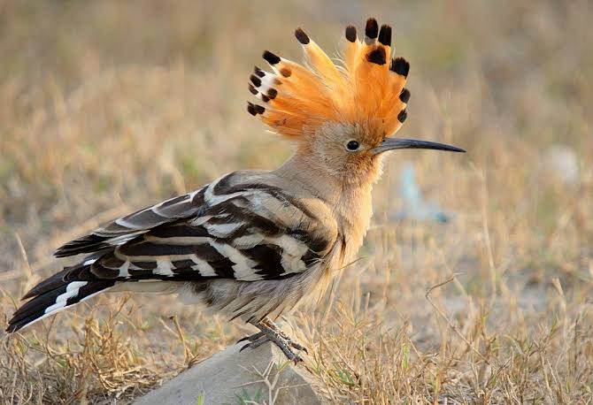

Hoopoes
Birds
Hoopoes are colourful birds found across Africa, Asia, and Europe, notable for their distinctive "crown" of feathers. Three living and one extinct species are recognized, though for many years all were lumped as a single species—Upupa epops.
Scientific name: Upupidae
Mass: Eurasian hoopoe: 67 g Encyclopedia of Life
Class: Aves
Family: Upupidae; Leach, 1820
Phylum: Chordata
Order: Bucerotiformes
The Eurasian hoopoe is a medium-sized bird, 25–32 cm (9.8–12.6 in) long, with a 44–48 cm (17–19 in) wingspan. It weighs 46–89 g (1.6–3.1 oz). The species is highly distinctive, with a long, thin tapering bill that is black with a fawn base.
The strengthened musculature of the head allows the bill to be opened when probing inside the soil. The hoopoe has broad and rounded wings capable of strong flight; these are larger in the northern migratory subspecies.
The hoopoe has a characteristic undulating flight, which is like that of a giant butterfly, caused by the wings half closing at the end of each beat or short sequence of beats.
Adults may begin their moult after the breeding season and continue after they have migrated for the winter.
The call is typically a trisyllabic oop-oop-oop, which may give rise to its English and scientific names, although two and four syllables are also common.
An alternative explanation of the English and scientific names is that they are derived from the French name for the bird, huppée, which means crested. In the Himalayas, the calls can be confused with that of the Himalayan cuckoo (Cuculus saturatus),
although the cuckoo typically produces four notes. Other calls include rasping croaks, when alarmed, and hisses. Females produce a wheezy note during courtship feeding by the male.
Biology of Hoopoes
Distribution and habitat
The Eurasian hoopoe is widespread in Europe, Asia, and North Africa and northern Sub-Saharan Africa. Most European and north Asian birds migrate to the tropics in winter. In contrast, the African populations are sedentary all year.
The species has been a vagrant in Alaska; U. e. saturata was recorded there in 1975 in the Yukon Delta. Hoopoes have been known to breed north of their European range, and in southern England during warm, dry summers that provide plenty of grasshoppers and
similar insects, although as of the early 1980s northern European populations were reported to be in the decline, possibly due to changes in climate.
The hoopoe has two basic requirements of its habitat: bare or lightly vegetated ground on which to forage and vertical surfaces with cavities (such as trees, cliffs or even walls, nestboxes, haystacks, and abandoned burrows) in which to nest.
These requirements can be provided in a wide range of ecosystems, and as a consequence the hoopoe inhabits a wide range of habitats such as heathland, wooded steppes, savannas and grasslands, as well as forest glades.
Diet and feeding
The diet of the Eurasian hoopoe is mostly composed of insects, although small reptiles, frogs and plant matter such as seeds and berries are sometimes taken as well.
It is a solitary forager which typically feeds on the ground. More rarely they will feed in the air, where their strong and rounded wings make them fast and manoeuvrable, in pursuit of numerous swarming insects.
More commonly their foraging style is to stride over relatively open ground and periodically pause to probe the ground with the full length of their bill. Insect larvae, pupae and mole crickets are detected by the bill and either extracted or dug out with the strong feet.
Hoopoes will also feed on insects on the surface, probe into piles of leaves, and even use the bill to lever large stones and flake off bark.
Common diet items include crickets, locusts, beetles, earwigs, cicadas, ant lions, bugs and ants. These can range from 10 to 150 mm (3⁄8 to 5 7⁄8 in) in length, with a preferred prey size of around 20–30 mm (3⁄4–1 1⁄8 in).
Larger prey items are beaten against the ground or a preferred stone to kill them and remove indigestible body parts such as wings and legs.
Breeding
The hoopoe genus is monogamous, although the pair bond apparently only lasts for a single season, and territorial. The male calls frequently to advertise his ownership of the territory.
Chases and fights between rival males (and sometimes females) are common and can be brutal. Birds will try to stab rivals with their bills, and individuals are occasionally blinded in fights.
The nest is in a hole in a tree or wall, and has a narrow entrance. It may be unlined, or various scraps may be collected. The female alone is responsible for incubating the eggs.
Clutch size varies with location: Northern Hemisphere birds lay more eggs than those in the Southern Hemisphere, and birds at higher latitudes have larger clutches than those closer to the equator.
In central and northern Europe and Asia the clutch size is around 12, whereas it is around four in the tropics and seven in the subtropics. The eggs are round and milky blue when laid, but quickly discolour in the increasingly dirty nest. They weigh 4.5 grams (69 grains). A replacement clutch is possible.